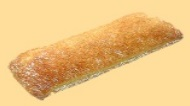

Хлебзавод "Восохд" находится в Западном округе столицы и обеспечивает хлебом более 400 тысяч человек. Завод сдан в эксплуатацию в 1969 г. Благодаря постоянным усилиям коллектива производственный потенциал предприятия был за истекшие десятилетия многократно приумножен.
"Восход" -- современное высокомеханизированное предприятие, уверенно вошедшее в рынок и занимающее на нем твердые позиции.
Основная часть продукции вырабатывается на заводе по традиционной классической технологии - опарным способом и на густых заквасках, в итоге получается вкусный и ароматный хлеб.
Все компоненты продуктов натуральные, никаких консервантов и химических добавок в изделиях нет. Для сохранения свежести продукции имеются закрытые камеры хранения. Практически вся продукция упаковывается в фирменные пакеты или полимерную пищевую пленку.
Лаборатория постоянно контролирует качество сырья и соответствие продукции нормам качества и безопасности. Ежемесячно в реализацию поступают новые изделия, разработанные с учетом спроса на хлебобулочную продукцию.
Мы вырабатываем хлеб на все случаи жизни - от повседневного до праздничного, весом от 30г до 1,5 кг. из муки пшеничной и ржаной, высшего, первого и второго сортов. Ассортимент продукции насчитывает более 100 наименований - это разнообразные батоны и буханки, сдобные и слоеные изделия; производим паляницу украинскую, которая в отличие от других сортов не несет в себе ни жира, ни сахара; диетические сорта с добавками отрубей, а также изделия, содержащие витамины для питания школьников; на заказ к свадьбе или торжеству мы изготавливаем каравай "Славянский". А для гурманов - изделия деревенские тыквенные, хлеб фруктовый, бородинский, ароматный, зерновой - Пумперникел.
Хорошее качество и широкий ассортимент - вот главные традиции нашего коллектива.
ЗАО "Восход" является постоянным участником крупных отраслевых выставок, в числе которых "Российские продукты питания", "Российская агропромышленная выставка", "Лучшая продовольственная продукция". Результат участия в выставках и конкурсах среди хлебозаводов, хлебокомбинатов и пекарен - это призы и медали за высокое качество изделий и отличный вкус.
По итогам 2003 года за заслуги перед городским сообществом Московская городская Дума наградила наш коллектив Почетной грамотой.
В 2007 году продукция ЗАО "Восход" отмечена Гран-При за качество.
В 2008 году в рамках проходящей выставки на Красной Пресне за стабильное качество продукции наш хлебозавод отмечен дипломами и награждён 2-мя золотыми и 1-ой серебрянной медалями.
В 2010 году на международном конкурсе "Экологическая безопасная продукция" продукция ЗАО "Восход" была отмечена медалью.
В 2011 году ЗАО "Восход" за высокое качество продукции награжден дипломами I и II степени, золотой и серебрянной медалями на 17-й международной выставке "Современное хлебопечение - 2011".
В 2014 году на Всероссийском конкурсе "Лучший хлеб России-2014" дипломом 1 степени награждён хлеб Бородинский, вырабатываемый на нашем предприятии.
На 8 международном смотре качества хлеба и хлебобулочных изделий в 2014 году Паляница Украинская, Каравай Славянский и мелкоштучная продукция нашего хлебозавода награждены Дипломом 1 степени и медалью за высокое качество продукции.
В декабре 2014 года ЗАО "Восход" получил Гран-При за широкий ассортимент, высокое качество хлеба и хлебобулочных изделий и сохранение традиций российского хлебопечения.
23 апреля 2015 года на 21-й медународной выставке "MODERN BAKERY MOSCOW" и Всероссийском конкурсе "Лучший хлеб России - 2015" продукция ЗАО "Восход" - хлеб дарницкий, хлеб бородинский классический, батон нарезной из пшеничной муки высшего сорта, изделия булочные "Деревенские тыквенные", хлебец "Зерновой", хлебец "Тыквенный", хлеб "Зерновой" получила Большой кубок, Гран-при и диплом.
Итальянская лепешка Чиаббата
Срок годности 72 часа
Масса нетто: 210 г.
